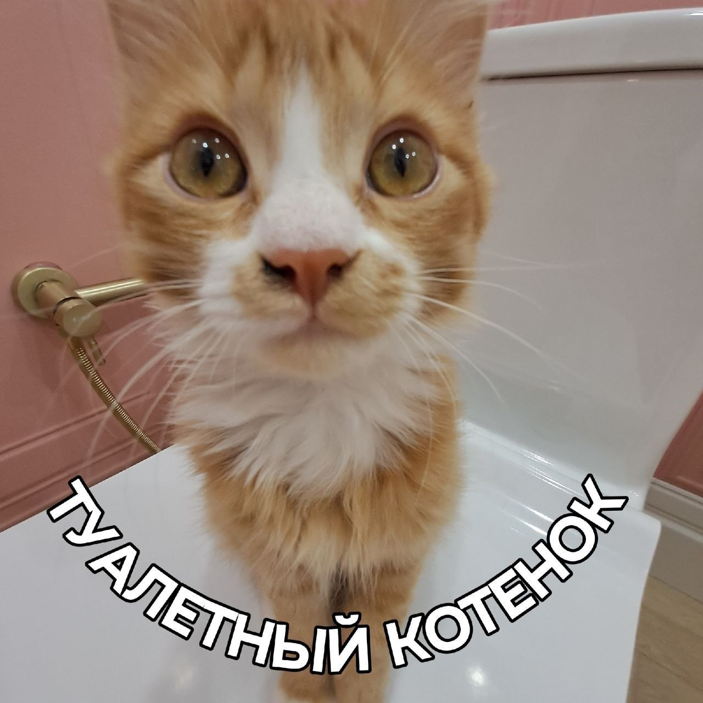

🥇 1 место Падение в унитаз

Легендарный день. Чепа решил, что ободок унитаза — это идеальное место для прогулок. Спойлер: он ошибался.
Один неверный шаг — и мокрый, с видом словно ничего не происходит он был вытащен из унитаза. Научило ли его это чему - нибудь?! Нет!
- Количество вымытых Чеп: 1
- Уровень драмы: максимальный